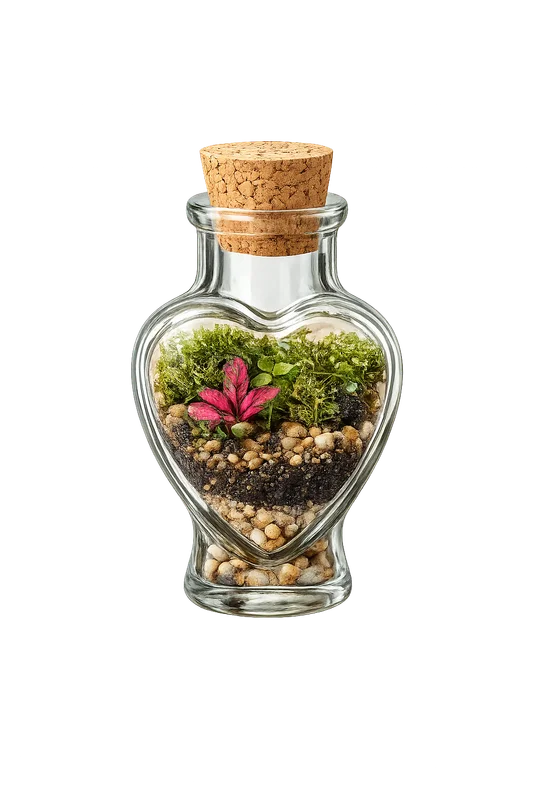

Lembrancinhas vivas
Lembranças artesanais para transformar momentos especiais em memórias cheias de vida.
Lembrancinhas vivas e artesanais que transformam momentos especiais em lembranças inesquecíveis. Um pedacinho da natureza para celebrar e agradecer.

Amplie as fotos e adicione suas favoritas ao orçamento. Valores e disponibilidade sob consulta.
Lembranças artesanais para transformar momentos especiais em memórias cheias de vida.
Pequenas obras de arte vivas para levar a natureza com você.
Um presente com natureza para agradecer e deixar sua marca na memória.
Fotos do catálogo original. Nomes e referências nesta vitrine ajudam a identificar sua escolha; confirme modelos, dimensões e composição com a loja.
Conte a ocasião, a quantidade e a data que você tem em mente. Converse com a Musgo in Vitro sobre modelos e possibilidades para a sua encomenda.
Conversar sobre minha ideia ↗Adicione suas referências ao orçamento e envie sua seleção pelo WhatsApp. Modelos, valores e disponibilidade são confirmados no atendimento.
Informe sua cidade e estado para consultar opções de entrega ou retirada, custos e prazos antes de fechar a encomenda.
As fotos apresentam referências do catálogo. Como são composições naturais e artesanais, confirme plantas, dimensões e acabamento disponíveis para o seu pedido.
Os cuidados variam conforme a espécie e a montagem. Peça as orientações específicas de luz e rega para a peça escolhida.
Reúna suas favoritas e leve sua ideia para o atendimento.